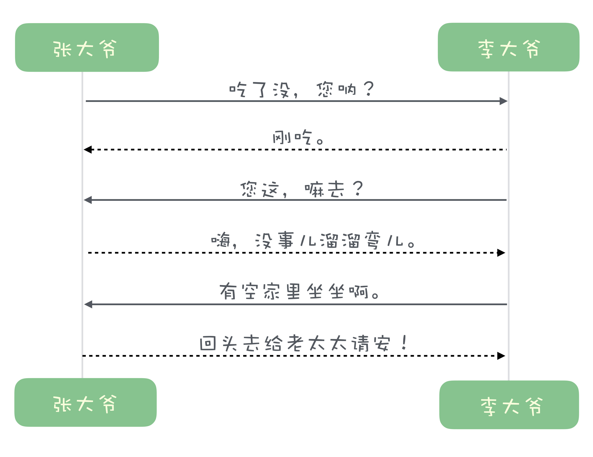
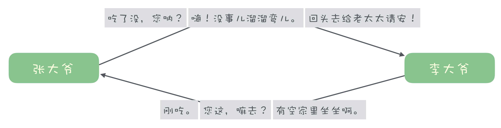
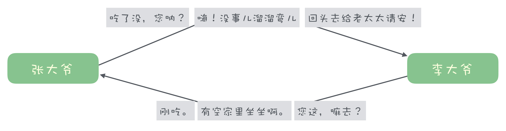
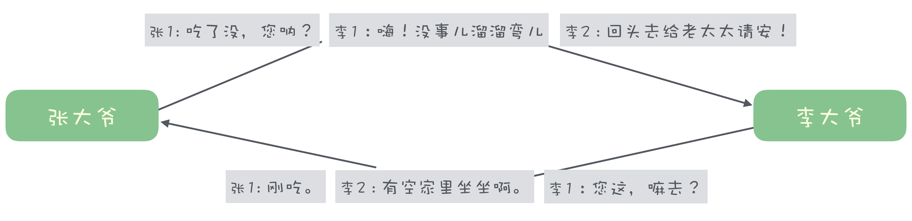

- 00 开篇词 优秀的程序员，你的技术栈中不能只有“增删改查”.md
- 00 预习 怎样更好地学习这门课？.md
- 01 为什么需要消息队列？.md
- 02 该如何选择消息队列？.md
- 03 消息模型：主题和队列有什么区别？.md
- 04 如何利用事务消息实现分布式事务？.md
- 05 如何确保消息不会丢失.md
- 06 如何处理消费过程中的重复消息？.md
- 07 消息积压了该如何处理？.md
- 08 答疑解惑（一） 网关如何接收服务端的秒杀结果？.md
- 09 学习开源代码该如何入手？.md
- 10 如何使用异步设计提升系统性能？.md
- 11 如何实现高性能的异步网络传输？.md
- 12 序列化与反序列化：如何通过网络传输结构化的数据？.md
- 13 传输协议：应用程序之间对话的语言.md
- 14 内存管理：如何避免内存溢出和频繁的垃圾回收？.md
- 15 Kafka如何实现高性能IO？.md
- 16 缓存策略：如何使用缓存来减少磁盘IO？.md
- 17 如何正确使用锁保护共享数据，协调异步线程？.md
- 18 如何用硬件同步原语（CAS）替代锁？.md
- 19 数据压缩：时间换空间的游戏.md
- 20 RocketMQ Producer源码分析：消息生产的实现过程.md
- 21 Kafka Consumer源码分析：消息消费的实现过程.md
- 22 Kafka和RocketMQ的消息复制实现的差异点在哪？.md
- 23 RocketMQ客户端如何在集群中找到正确的节点？.md
- 24 Kafka的协调服务ZooKeeper：实现分布式系统的“瑞士军刀”.md
- 25 RocketMQ与Kafka中如何实现事务？.md
- 26 MQTT协议：如何支持海量的在线IoT设备.md
- 27 Pulsar的存储计算分离设计：全新的消息队列设计思路.md
- 28 答疑解惑（二）：我的100元哪儿去了？.md
- 29 流计算与消息（一）：通过Flink理解流计算的原理.md
- 30 流计算与消息（二）：在流计算中使用Kafka链接计算任务.md
- 31 动手实现一个简单的RPC框架（一）：原理和程序的结构.md
- 32 动手实现一个简单的RPC框架（二）：通信与序列化.md
- 33 动手实现一个简单的RPC框架（三）：客户端.md
- 34 动手实现一个简单的RPC框架（四）：服务端.md
- 35 答疑解惑（三）：主流消息队列都是如何存储消息的？.md
- 加餐 JMQ的Broker是如何异步处理消息的？.md
- 结束语 程序员如何构建知识体系？.md
13 传输协议：应用程序之间对话的语言
你好，我是李玥。
经过前面几课的学习，我们已经可以实现高性能的结构化数据传输了。不过，应用程序之间要想互相通信，一起配合来实现业务功能，还需要有一套传输协议来支持。
传输协议就是应用程序之间对话的语言。设计传输协议，并没有太多规范和要求，只要是通信双方的应用程序都能正确处理这个协议，并且没有歧义就好了。
这节课，我们就来说一下设计高性能传输协议的一些方法和技巧。
如何“断句”？
既然传输协议也是一种语言，那么在应用程序之间“通话”的过程中，与我们人类用自然语言沟通有很多相似之处，但是需要处理的问题却又不同。
现代语言，无论是汉语还是英语，都是通过标点符号来分隔句子的，这个叫“断句”。古代汉语是没有标点符号的，断句全靠上下文，但这种断句方式有的时候会出现歧义，比如很著名的那个段子“下雨天留客天天留我不留”，不同的断句方式，意思完全不一样。
我们在传输数据的的时候，首先要解决的就是断句问题。对于传输层来说，收到的数据是什么样的？就是一段一段的字节，但是，因为网络的不确定性，你收到的分段并不一定是我们发出去的分段。比如我们发送的数据是这样的：
下雨天 留客天 天留 我不留
这样断句，意思就是，作为主人我不想让你在我这儿住。
经过网络传输，可能就变成这样了:
下雨天 留客天 天留我不 留
意思完全变了，客人想赖在这儿不走了。
所以，靠时间停顿来断句是不靠谱的。
你可能会想到，那我们在协议中也加上“标点符号”不就行了？而且，我们并不需要像自然语言中那么多种标点符号，只需要定义一个分隔符就可以了。
这个办法是可行的，也有很多传输协议采用这种方法，比如 HTTP1 协议，它的分隔符是换行（\r\n）。但是，这个办法有一个问题比较难处理，在自然语言中，标点符号是专用的，它没有别的含义，和文字是有天然区分的。
在数据传输的过程中，无论你定义什么字符作为分隔符，理论上，它都有可能会在传输的数据中出现。为了区分“数据内的分隔符”和真正的分隔符，你必须得在发送数据阶段，加上分隔符之前，把数据内的分隔符做转义，收到数据之后再转义回来。这是个比较麻烦的过程，还要损失一些性能。
更加实用的方法是，我们给每句话前面加一个表示这句话长度的数字，收到数据的时候，我们按照长度来读取就可以了。比如：
03 下雨天 03 留客天 02 天留 03 我不留
这里面我们固定使用 2 位数字来存放长度，每句话最长可以支持到 99 个字。接收后的处理就比较简单了，我们先读取 2 位数字 03，知道接下来的 3 个字是第一句话，那我们接下来就等着这 3 个字都收到了，就可以作为第一句话来处理了，接下来再按照这个方法来读第二句话、第三句话。
这种预置长度的方法就很好解决了断句的问题，并且它实现起来要比分隔符的方法简单很多，性能也更好，是目前普遍采用的一种分隔数据的方法。
掌握了断句的方法之后，我们再来看一下实现高性能协议还需要解决什么问题。
用双工收发协议提升吞吐量
人类之间通过语言来交流时，基本上是处于一种单工通信的状态，也就是我说你听，然后再你说我听这样。如果俩人同时说，那就不是交流了，那是两个外国人在吵架。所谓的单工通信就是，任何一个时刻，数据只能单向传输，一个人说的时候，另外一个人只能听。
HTTP1 协议，就是这样一种单工协议，客户端与服务端建立一个连接后，客户端发送一个请求，直到服务端返回响应或者请求超时，这段时间内，这个连接通道上是不能再发送其他请求的。这种单工通信的效率是比较低的，很多浏览器和 App 为了解决这个问题，只能同时在服务端和客户端之间创建多个连接，这也是没有办法的办法。
单工通信时，一句对一句，请求和响应是按照顺序依次收发，有一个天然的对应关系。比如说，胡同口张大爷和李大爷俩大爷碰上了：

这个图里面，实线是请求，虚线是响应，一问一答，这是单工协议。
我们知道，TCP 连接它是一个全双工的通道，你可以同时进行数据的双向收发，互相是不会受到任何影响的。要提高吞吐量，应用层的协议也必须支持双工通信。
如果说俩大爷有边听边说的本事，换成双工协议后，是这样的：

这时候就出现一个问题，即使俩大爷有这个边听边说的本事，问题和答案可能已经对不上了。在多线程并发的环境下，顺序也没有办法保证，这个对话就有可能变成这样：

在实际上设计协议的时候，我们一般不关心顺序，只要需要确保请求和响应能够正确对应上就可以了。
这个问题我们可以这样解决：发送请求的时候，给每个请求加一个序号，这个序号在本次会话内保证唯一，然后在响应中带上请求的序号，这样就可以把请求和响应对应上了。
加上序号后，俩大爷的就可以实现双工通信了：

张大爷和李大爷可以对自己发出去的请求来编号，回复对方响应的时候，带上对方请求的编号就可以了。这样就解决了双工通信的问题。
小结
这节课我们主要讲了传输协议，在设计传输协议的时候，只要双方应用程序能够识别传输协议，互相交流就可以了，并没有什么一定要遵循的规范。
在设计传输协议的时候，需要解决如何断句的问题，我们给大家提供了“分隔符”和“前置长度”两种断句的方法，你可以选择使用。
另外，我给大家介绍的这种“使用 ID 来标识请求与响应对应关系”的方法，是一种比较通用的实现双工通信的方法，可以有效提升数据传输的吞吐量。
解决了断句问题，实现了双工通信，配合专用的序列化方法，你就可以实现一套高性能的网络通信协议，实现高性能的进程间通信。很多的消息队列、RPC 框架都是用这种方式来实现它们自己的私有应用层传输协议。
© 2019 - 2023 Liangliang Lee. Powered by gin and hexo-theme-book.